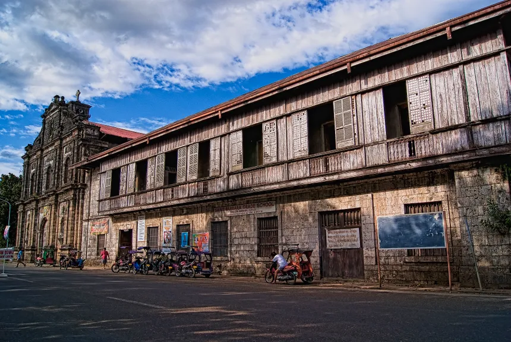
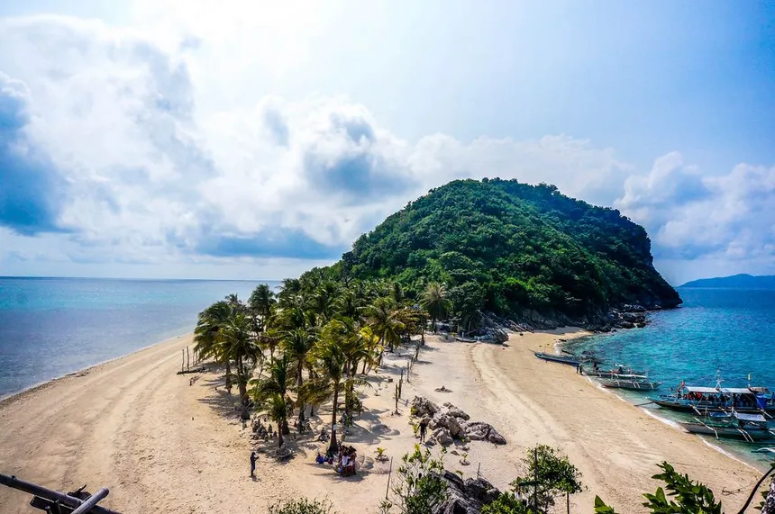
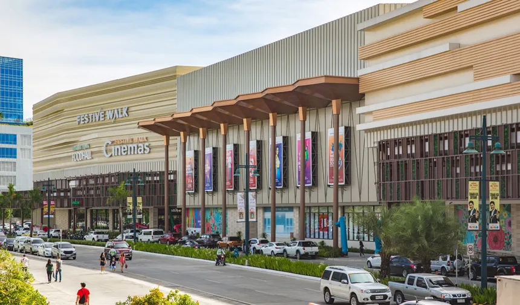
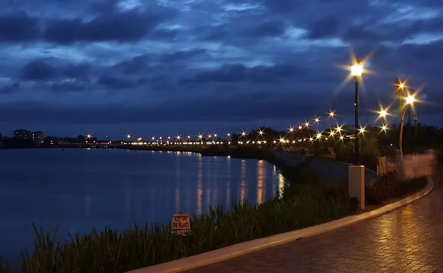
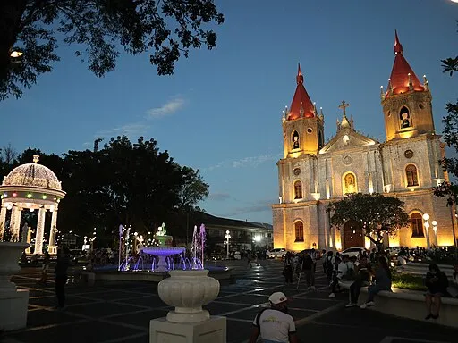
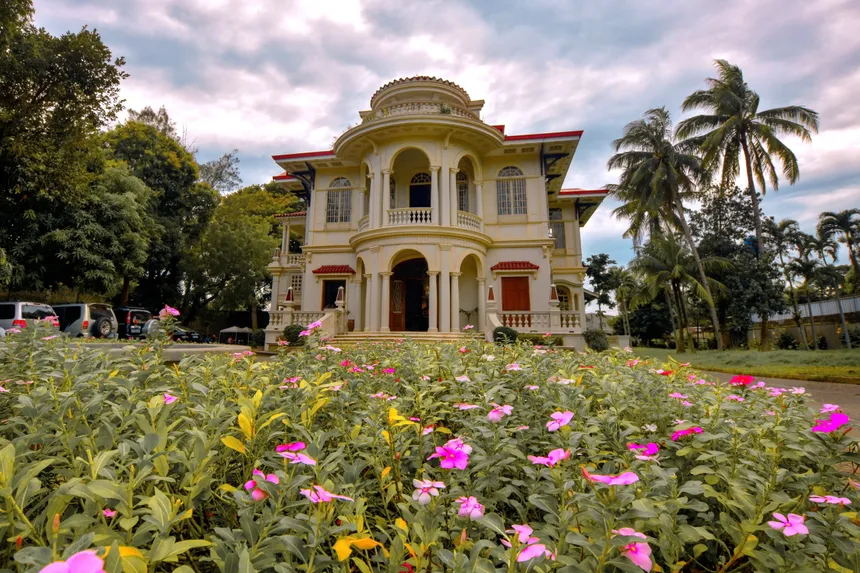
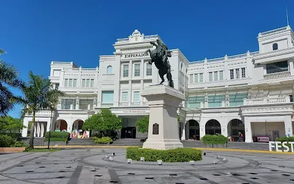

Santa Barbara Parish Church
A historic Baroque-Renaissance church built in 1845, which served as the headquarters of the revolutionary forces under General Martin Delgado.
See more
Location: Santa Barbara, Central Iloilo (15 km north of Iloilo City).
Significance: Declared a National Landmark and Cultural Treasure; site of the historic 1898 "Cry of Santa Barbara" where the Philippine flag was first raised outside Luzon.
Visitor Tips: Visit the adjoining historic convent and parish museum. Best photographed in the early morning sunlight.

Guimaras Strait & Eco-Tourism
A pristine island province located just across the Iloilo Strait, globally celebrated for exporting the sweetest mangoes and tranquil eco-beaches.
See more
Location: Guimaras Island (15-minute boat crossing from Parola Wharf, Iloilo City).
Significance: Protected agricultural sanctuary renowned for Carabao mango production with strict biological safeguards.
Visitor Tips: Don't miss the Trappist Monastery, Guisi 18th-century lighthouse ruins, and the annual Manggahan Festival held every May.

Festive Walk Iloilo
The premier open-air lifestyle and shopping avenue in the heart of Mandurriao, anchoring the modern commercial boom of Iloilo City.
See more
Location: Iloilo Business Park, Mandurriao, Iloilo City.
Significance: Recognized as the Best Retail Architectural Design in the Philippines; features a vibrant 1.1 km pedestrian dining strip.
Visitor Tips: Home to the Iloilo Museum of Contemporary Art (ILOMOCA), pet-friendly parks, and weekend open-air artisan markets.

Iloilo River Esplanade
An award-winning urban waterfront park that restored the ecological vitality of the Iloilo River while providing kilometers of scenic promenades.
See more
Location: Spanning both riverbanks across Mandurriao, Molo, and City Proper districts.
Significance: Master-planned by architect Paulo Alcazaren; a globally recognized milestone in urban river rehabilitation and flood resilience.
Visitor Tips: Ideal for sunset walking, jogging, cycling, and dining with scenic river views. Illuminated and secured 24/7.
Miag-ao Church (Santo Tomás)
A UNESCO World Heritage Baroque fortress church built in 1797 with native yellow-ochre limestone and iconic botanical reliefs.
See more
Location: Zulueta Avenue, Miagao, Southern Iloilo (40 km west of Iloilo City).
Significance: Inscribed on the UNESCO World Heritage list in 1993 as one of four Baroque Churches of the Philippines; constructed with massive buttresses to repel pirate incursions.
Architectural Highlight: The sculptural pediment prominently depicts St. Christopher carrying the Child Jesus surrounded by indigenous coconut, papaya, and guava tree motifs.

Molo Church (St. Anne Parish)
A neoclassical and Gothic-Renaissance landmark built in 1831, famously called "The Feminist Church" for its sixteen female saint statues.
See more
Location: San Pedro Street, Molo District, Iloilo City (facing Molo Plaza).
Significance: National Historical Landmark constructed from coral stone bonded with egg white mortar; visited by Dr. Jose Rizal in 1896.
Visitor Tips: Explore the heritage Yusay-Consing Molo Mansion located right across the plaza, and taste authentic local Pancit Molo!

Molo Mansion (Yusay-Consing)
A preserved 1920s heritage mansion showcasing classic Philippine colonial architecture, cultural exhibitions, and artisanal local crafts.
See more
Location: Locsin Street, Molo, Iloilo City.
Significance: Rescued and fully restored as a cultural center featuring high ceilings, hardwood arches, and traditional capiz window panes.
Visitor Tips: Stroll the manicured garden café, purchase authentic Ilonggo woven textiles (hablon), and enjoy native tablea hot chocolate.

Economic History Museum
Housed inside the historic Ynchausti y Compañía building, chronicling the rich trade routes, sugar boom, and mercantile legacy of Iloilo.
See more
Location: Ortiz Street, Calle Real Heritage Zone, City Proper, Iloilo City.
Significance: The first museum in the Philippines exclusively dedicated to economic history, spanning pre-colonial trading to the 19th-century sugar boom.
Visitor Tips: Admission is free. Interactive multimedia dioramas and century-old artifacts depict the industrialization of Panay.